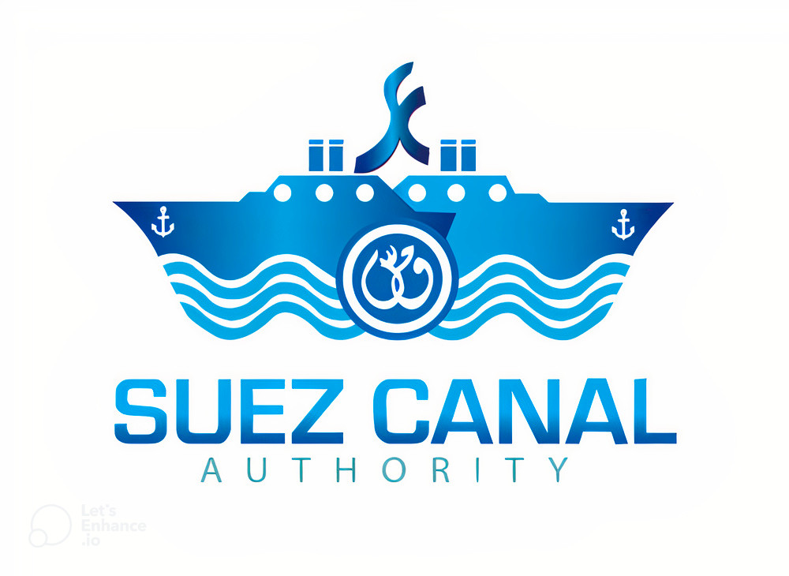
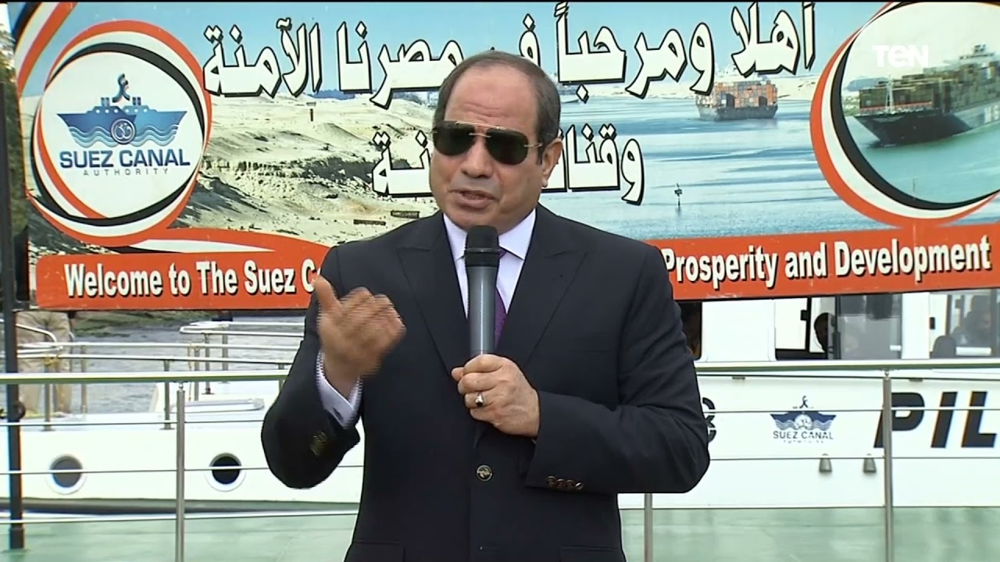
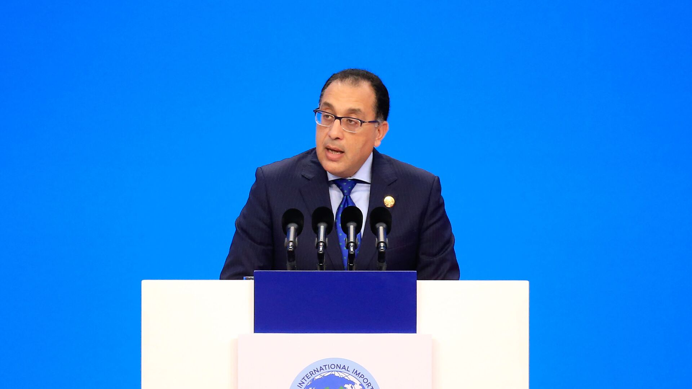
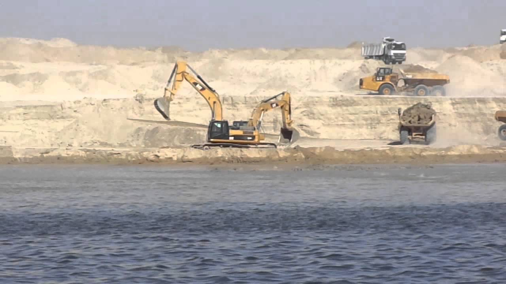
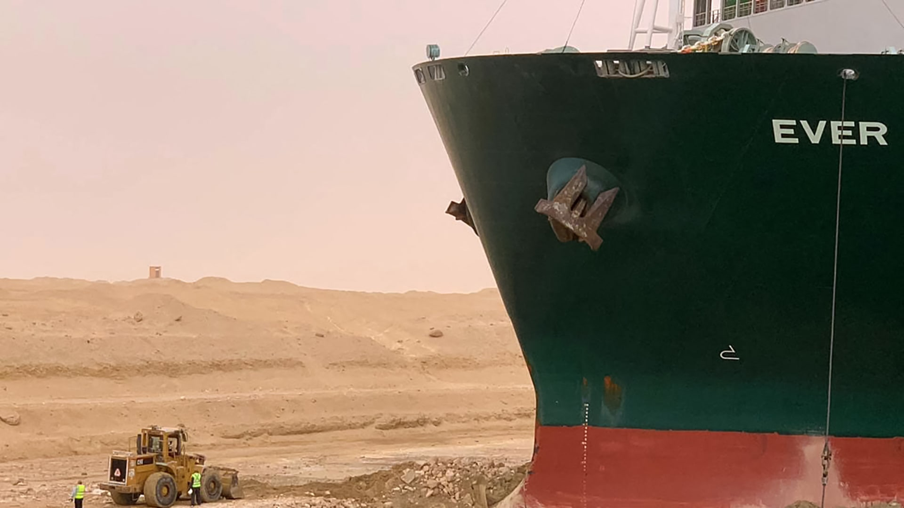
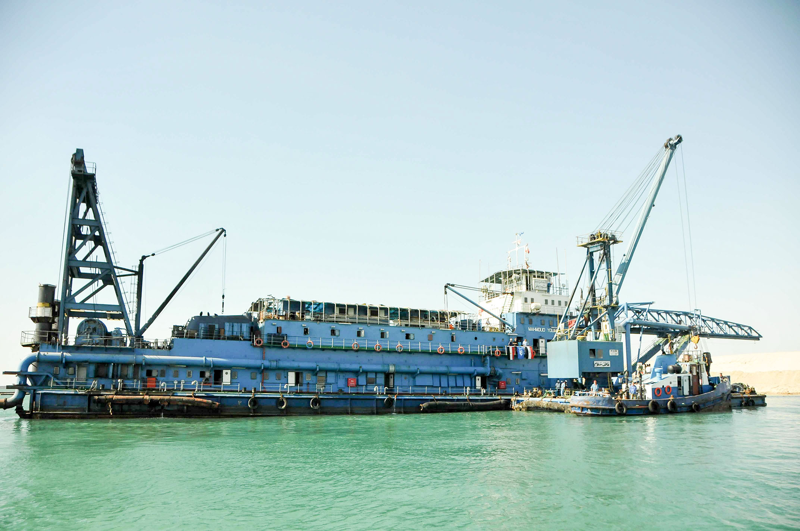

قناة السويس الجديدة هو مشروع لتطوير وتوسعة قناة السويس وهى عباره عن فرع بطول 35 كم يمر بموازاة قناة السويس الأصلية والتى يبلغ طولها 190 كم وهى تعمل كممر ملاحي مزدوج لتلافي توقف القافلات العملاقة فى الغاطس فى منطقة البحيرات المرة . تم افتتاح المشروع في 6 أغسطس 2015
في 5 أغسطس 2014 أعلن الرئيس عبد الفتاح السيسي عن البدء فعلياً في إنشاء مجرى ملاحي جديد لقناة السويس وتعميق المجرى الملاحي الحالي وتنمية محور قناة السويس بالكامل، بهدف تعظيم دور إقليم قناة السويس كمركز لوجستي ،صناعي ،تجارى وسياحى. يضم الإقليم ثلاث محافظات هي بورسعيد والسويس والإسماعيلية.
في 15 أغسطس 2014 أعلن رئيس الوزراء المهندس إبراهيم محلب أنه تقرر طرح شهادات استثمار باسم شهادة استثمار قناة السويس بهدف جمع 60 مليار جنيه مصري لتمويل مشروع محور قناة السويس من خلال المصريين فقط. على أن تطرح الشهادات من البنوك القومية بفائدة سنوية 12% تصرف كل ثلاثة أشهر، على أن يسترد أصل المبلغ بعد خمس سنوات.[11][12][13] في 19 أغسطس 2014 أعلن الفريق مهاب مميش، رئيس هيئة قناة السويس عن التحالف الفائز بتنفيذ مشروع تنمية قناة السويس، وهو تحالف دار الهندسة.[14] وفي 15 سبتمبر 2014 أعلن محافظ البنك المركزي المصري، أن حصيلة بيع شهادات استثمار قناة السويس وصلت إلى نحو 61 مليار جنيه مصري، منذ بداية الطرح عن طريق البنوك يوم 04 سبتمبر 2014، وهو المبلغ المطلوب لحفر القناة الجديدة، وأنه تقرر إغلاق الاكتتاب في الشهادات بالبنوك.
بدأت مرحلة الحفر الجاف بالمشروع في 7 أغسطس 2014، وشارك فيها 44 ألف مواطن مصري، بمصاحبة 4500 معدة، وإجمالي 84 شركة، وتمت إضافة كتيبتين من القوات المسلحة لإزالة الألغام ومخلفات الحرب، بالإضافة إلى كتيبتي طرق للمساعدة في عمليات الحفر. واستطاعوا إنهاء الحفر الجاف بنسبة 100% خلال 9 شهور، عن طريق استخراج حوالي 250 مليون متر مكعب من الرمال،
بدأت مرحلة الحفر المائي (التكريك) بعد انتهاء الحفر الجاف مباشرة، للوصول إلى العمق المطلوب، وشارك في هذه المرحلة 2000 عامل من هيئة قناة السويس، 3000 عامل من تحالف التحدي، 750 عامل من تحالف الأمل، وذلك باستخدام إجمالي 45 كراكة، إضافة إلى 4 فنادق عائمة منذ بداية المشروع لاستراحة العاملين وتناوب الورديات. وانتهت أعمال التكريك المائي برفع 258.8 مليون متر مكعب من الرمال المشبعة بالمياه
تم تركيب عدد 120 شمندورة على طول المجرى الملاحي للقناة الجديدة مزودة بإضاءة من الطاقة الشمسية ومرتبطة بنظام إلكتروني عبر الحاسب الآلي يحقق الربط والاتصال بين السفن العابرة ومراكز
